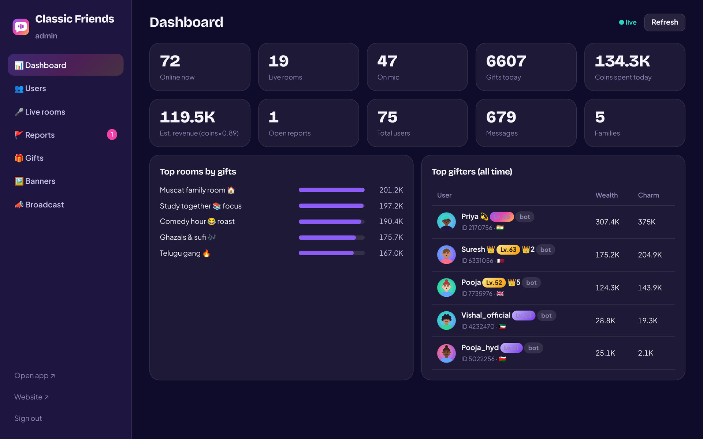
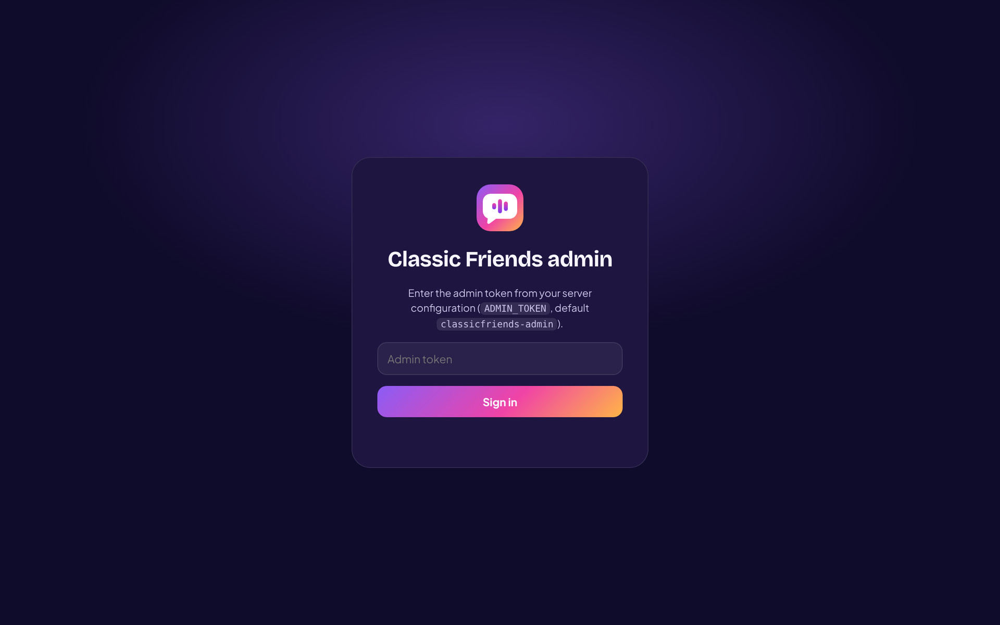
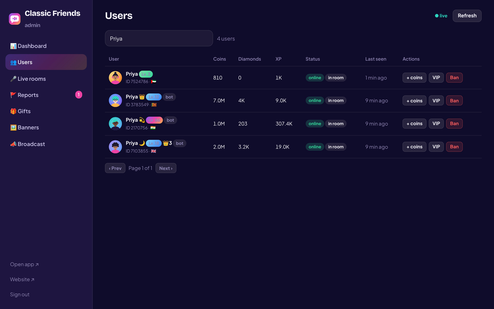
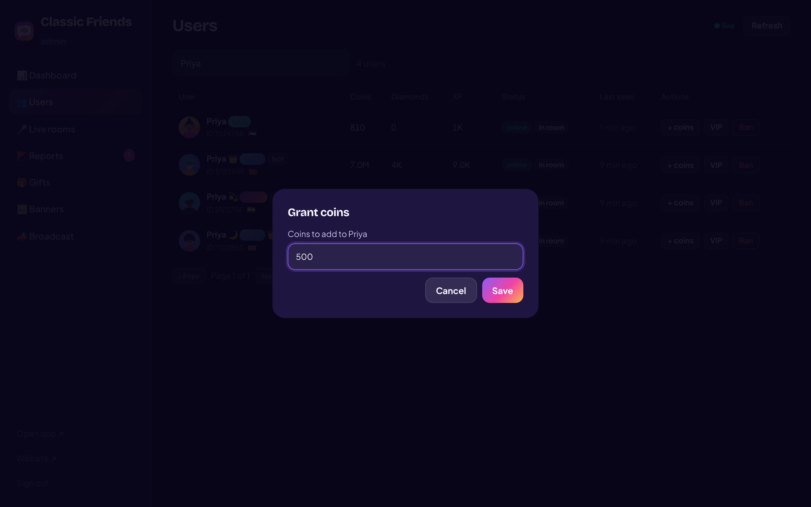
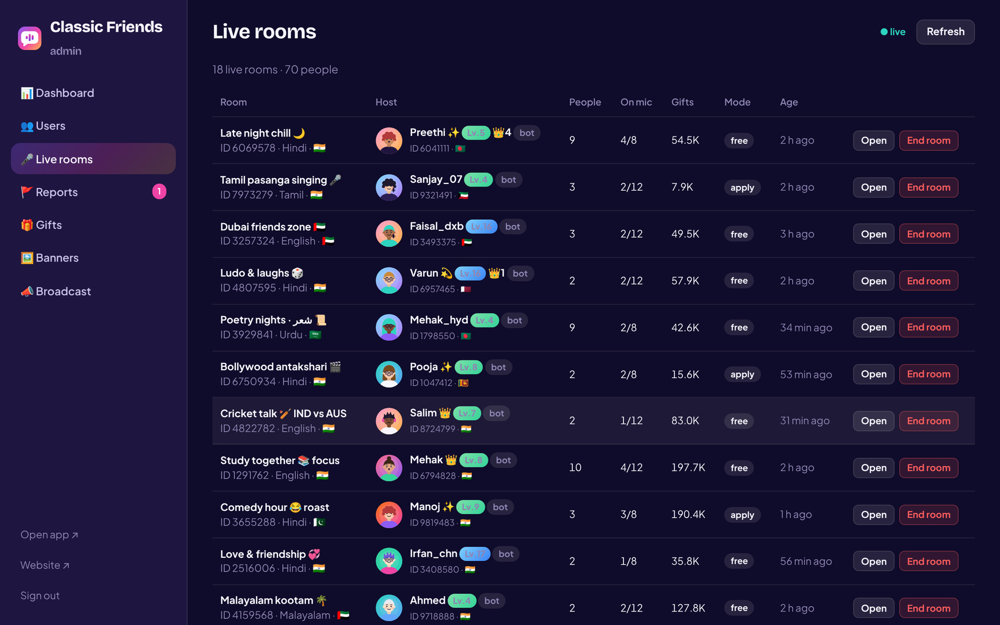
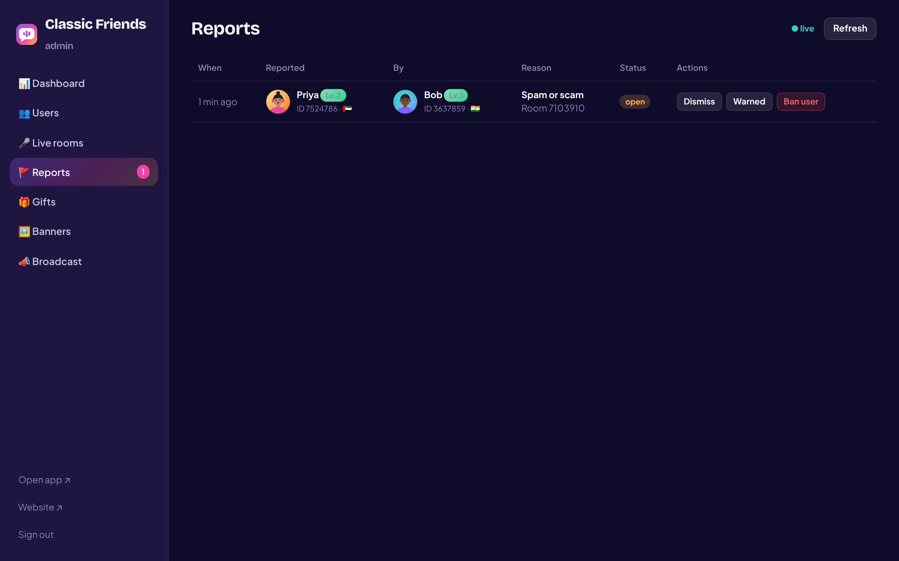
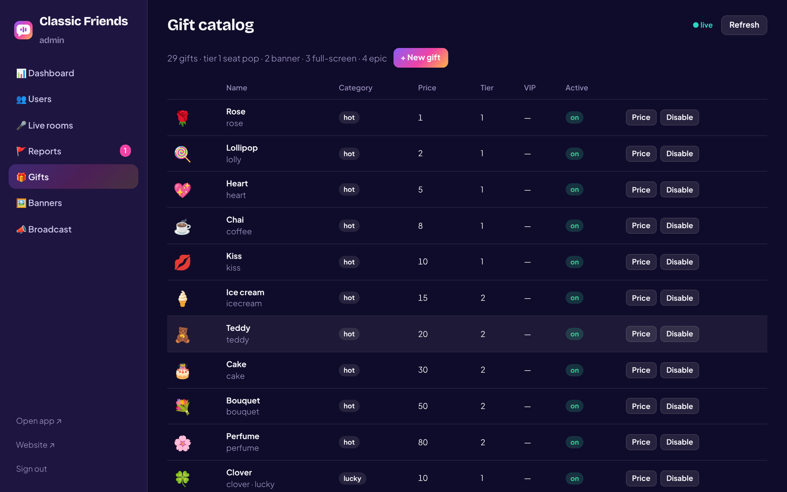
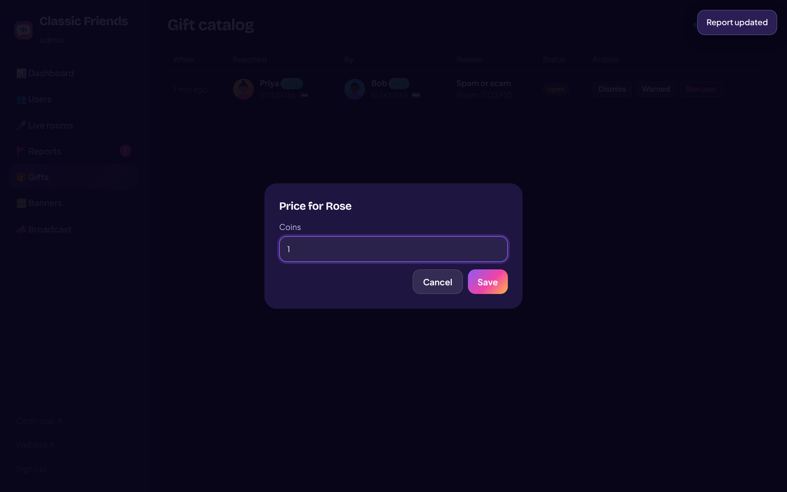
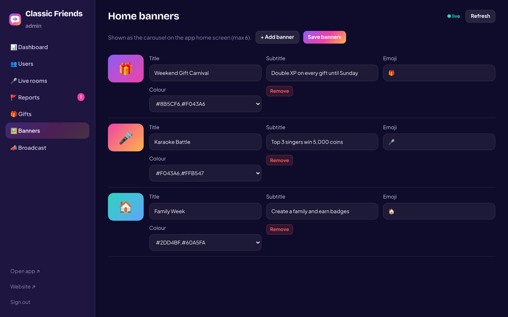
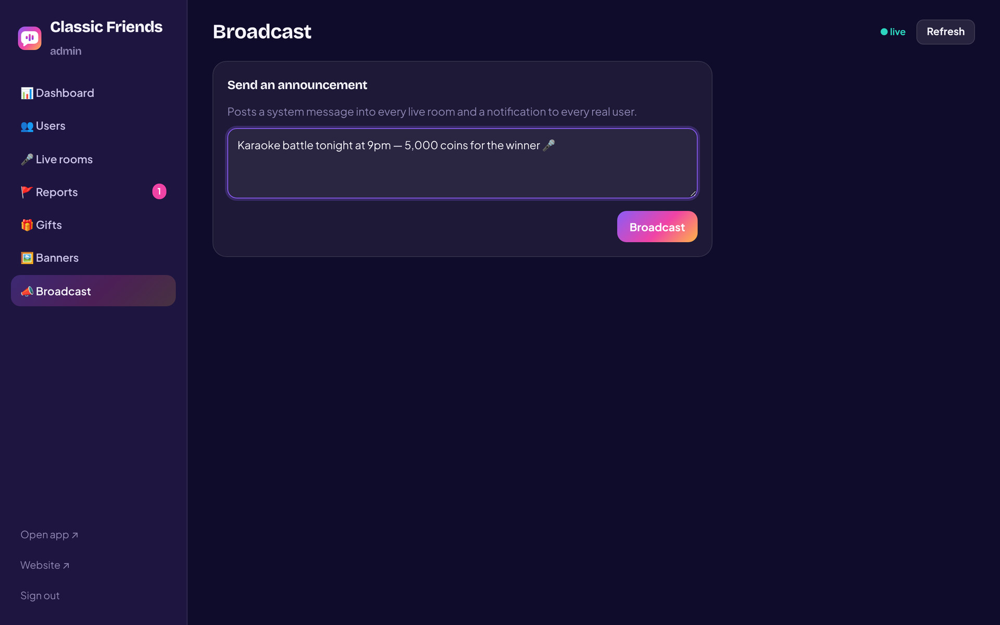

Operations handbook · Version 1.0 · Internal
Admin Console
Guide
How to run Classic Friends day to day: the dashboard, people, live rooms, reports, the gift catalog, banners, broadcasts and the server behind it all.

How to run Classic Friends day to day: the dashboard, people, live rooms, reports, the gift catalog, banners, broadcasts and the server behind it all.

The admin console is the control room for Classic Friends. It shows what is happening right now and lets a small team keep the community safe, the economy healthy and the home screen fresh.
classicfriends-admin) before anyone but you can reach the server. Only open the console over https://. Never paste the token into chats or screenshots. Rotate it whenever a team member leaves (see Chapter 10).Who is online, which rooms are live, gifts and coins today, open reports, top rooms and top gifters.
Find anyone by name or ID. Grant coins, set VIP, ban or unban.
Every open room with host, people, mics and gifts. Open one, or end it.
Everything members have reported, with context. Dismiss, warn or ban.
Prices, availability and new gifts.
Home-screen campaigns and app-wide announcements.
The console is protected by one admin token. Everyone who knows the token has every power on this list, so keep the circle small. A practical split for a growing team:
| Role | Uses | Should not |
|---|---|---|
| Owner | Everything, including the server, the token, gift prices and payouts. | — |
| Operations | Dashboard, banners, broadcasts, gift catalog, coin grants for promotions. | Ban users without a report trail. |
| Moderator | Reports, users (ban/unban), live rooms (end room). | Change prices, grant coins, edit banners. |
| Support | Users (look up, small coin grants for refunds/compensation). | Ban, end rooms, change catalog. |
The console lives at /admin/ on the same address as the app.

https://your-domain/admin/ (locally: http://localhost:3000/admin/).ADMIN_TOKEN value set on the server./admin/#users, /admin/#rooms, /admin/#reports, /admin/#gifts, /admin/#banners, /admin/#broadcast.A live picture of the community. Glance at it at the start and end of every shift.
| Tile | Exactly what it counts | What to watch for |
|---|---|---|
| Online now | Accounts connected at this moment, including simulated people (bots) if they are enabled. | Your busiest hours — schedule broadcasts and events for them. |
| Live rooms | Rooms currently open. | A sudden drop can mean the server restarted. |
| On mic | People sitting on a mic seat across all rooms. | Low "on mic" with high "online" means rooms are quiet — nudge hosts. |
| Gifts today | Number of gifts sent since midnight (UTC). Resets daily. | Compare day over day after campaigns. |
| Coins spent today | Coins spent on gifts since midnight (UTC). | Your core economy signal. |
| Est. revenue | Coins spent today × 0.89 — a rough platform share after host payouts and store fees. Adjust the factor in shared/engine.js to match your real margin. | Treat as an estimate, not accounting. |
| Open reports | Reports nobody has acted on yet. | Keep this at zero by the end of each shift. |
| Total users | All accounts ever created on this server (bots included). | Growth. |
| Messages | Room chat messages since the server started. | Engagement. |
| Families | Families that exist. | Community depth. |
Top rooms by gifts ranks live rooms by the total coins gifted inside them since they opened; the bar is relative to the top room. Top gifters lists the five accounts with the most XP (coins ever sent) and their Charm (coins ever received). People marked bot are simulated and can be ignored for business decisions.
BOTS=0 (Chapter 10).Find any account, see its balances and status, and act on it.

| Column | Meaning |
|---|---|
| User | Avatar, name, level badge, VIP crown and level, bot tag if simulated; below: Classic Friends ID and country. |
| Coins | Spendable balance. |
| Diamonds | Earned from gifts received; exchangeable for coins by the member. |
| XP | Total coins ever sent (drives level and the Wealth ranking). |
| Status | online connected now · offline · banned suspended · in room currently inside a room. |
| Last seen | Time since the account was last connected. |

Adds coins to the account. Use it for refunds, compensation after an outage, contest prizes and promotions. Enter the amount and tap Save. Keep a note of every grant (who, how much, why) in your team's log — the console does not keep one yet.
Sets the VIP level 0–7 directly. A level set here stays until you change it (it does not expire like a purchased VIP). Use 0 to remove VIP. Typical uses: partner hosts, agency leaders, making good on a failed purchase.
Confirm the dialog to ban. The member is removed from any room immediately, sees Your account was suspended, and cannot sign in again until you tap Unban. Banning is reversible and keeps the account's history, coins and friends.
Every room that is open right now, who hosts it and how busy it is.

| Column | Meaning |
|---|---|
| Room | Name, ID, language, country, 🔒 private, ⚔️ PK running. |
| Host | The owner of the room (their name, level and VIP). |
| People | Members inside right now. |
| On mic | Occupied seats / total seats (8 or 12). |
| Gifts | Coins gifted in this room since it opened. |
| Mode | free — anyone can take a seat · apply — the host approves seats. |
| Age | How long the room has been open. |
Open launches the room in the app in a new tab, using whatever member account that browser is signed in with. Sign in to the app with a dedicated staff account (for example "Classic Friends Team") so hosts recognise you. Inside the room you can listen, read the chat and use the normal member tools (report, block). You do not get host powers in someone else's room — use End room from the console for that.
End room closes the room for everyone after a confirmation. Members see The host ended the room and return to the home screen; the room disappears from the list. Use it for rooms that break the rules (after a warning where possible), for abandoned rooms with a disconnected host, or during an incident. There is no undo, but the host can open a new room at once.
Members report people from any seat, chat line, profile or private chat. Every report lands here with its context.

| Column | Meaning |
|---|---|
| When | Time since the report was filed. |
| Reported | The account being reported — the person you may act on. |
| By | The member who filed it. Repeated reports from one person about many others can be a sign of a grudge. |
| Reason | One of: Abusive language · Harassment · Spam or scam · Inappropriate content · Underage user · Other. Any extra details and the room ID appear underneath. |
| Status | open waiting for you · resolved dismissed · warned member was warned · ban member was banned. |
| Behaviour | First time | Repeat |
|---|---|---|
| Rude language, spam, off-topic selling | Warn | Ban for 7 days (unban manually), then permanent |
| Harassment, hate, targeted bullying | Warn and end the room if the host allowed it | Permanent ban |
| Scams: selling coins outside the app, asking for OTPs or payment details | Permanent ban | — |
| Sexual content, threats, violence | Permanent ban; preserve details for authorities if needed | — |
| Underage user | Ban and delete personal data on request | — |
| False or vengeful reporting | Dismiss; warn the reporter if it repeats | Ban the reporter after repeated abuse |
Twenty-nine gifts across four shelves. You can change prices, switch gifts on or off and add new ones without touching code.

| Column | Meaning |
|---|---|
| Category | hot everyday · lucky can pay the sender back · luxury big effects · vip needs a VIP level. |
| Price | Coins the sender pays per gift. |
| Tier | Visual effect: 1 pops on the receiver's seat · 2 adds a fly-in and a banner · 3 fills the screen with a burst · 4 adds a screen flash and vibration. |
| VIP | Minimum VIP level needed to send it (VIP shelf only). |
| Active | on can be sent · off hidden from the panel. |

Keep the shelves readable: Hot 1–80, Lucky 10–100, Luxury 100–50,000, VIP 300–30,000. Changing tiers or VIP levels is done in shared/catalog.js.
shared/catalog.js as well, or they will be lost on the next restart.The carousel at the top of every member's home screen. Up to six banners, each with a title, subtitle, emoji and colour.

Ideas that perform: weekend gift carnival with double XP, karaoke or poetry battles with a coin prize, "Family week", new-host spotlight, a festival greeting (Diwali, Eid, Onam, Pongal). Change at least one banner every week so the home screen never looks stale.
One message to everyone: a system line in every live room's chat and a notification in every member's inbox.

What the owner needs to know about the machine behind the console. Deployment to the internet is covered step by step in docs/DEPLOYMENT.md.
| Task | Command (in the project folder) |
|---|---|
| Install (first time) | npm install |
| Start | npm start → app at port 3000, console at /admin/ |
| Start with settings | ADMIN_TOKEN=secret BOTS=0 START_COINS=200 npm start |
| Stop | Ctrl + C in the terminal (or pm2 stop classic-friends on a server) |
| Health check | Open /healthz — it answers {"ok":true} with the uptime in seconds |
| Name | Default | Meaning |
|---|---|---|
PORT | 3000 | Network port. |
ADMIN_TOKEN | classicfriends-admin | The console password. Change it before going live; restart to apply. |
BOTS | 70 | Simulated people. Set 0 for a real community, or a small number (10–20) while it grows. |
START_COINS | 1000 | Welcome coins for every new account. 100–200 is sensible once payments are live. |
server/data/users.json every 30 seconds and on shutdown, and restored on the next start. Back this file up daily.shared/engine.js and shared/catalog.js — so make lasting changes there too.docs/ARCHITECTURE.md.ADMIN_TOKEN in your hosting dashboard or .env file.A small team can run Classic Friends well with these habits.
server/data/users.json somewhere safe.The numbers behind coins, diamonds, XP and VIP, as configured in shared/catalog.js.
| Event | Sender / buyer | Receiver |
|---|---|---|
| Gift of N coins | −N coins, +N XP, +N Wealth (daily/weekly/monthly rankings) | +0.5 N diamonds, +N Charm |
| Lucky gift | As above, plus a random return: 30 % nothing, 30 % 1×, 30 % 2×, 8 % 10×, 2 % 50× the price | As above |
| Diamond exchange | 100 diamonds → 70 coins | — |
| Store item | −price, +price/2 XP; item lasts 30 days | — |
| VIP purchase | −price, +price XP; 30 days, extendable | — |
| Lucky wheel | −10 coins; prizes 0 / 5 / 10 / 20 / 50 / 100 / 500 with weights 30 / 25 / 20 / 12 / 8 / 4 / 1 | — |
| Lucky bag | −total coins, +total XP | Random shares to whoever taps first |
| Check-in streak | +10 / 20 / 30 / 50 / 80 / 120 / 200 coins on days 1–7 | — |
| Daily tasks | +20 to +50 coins each, up to 220 per day | — |
| Pack | Coins | Bonus | INR | AED | USD |
|---|---|---|---|---|---|
| Starter | 100 | — | 89 | 3.99 | 0.99 |
| Small | 500 | +50 | 449 | 19.99 | 4.99 |
| Popular | 1,000 | +200 | 899 | 39.99 | 9.99 |
| Big | 2,500 | +500 | 2,099 | 94.99 | 24.99 |
| Large | 5,000 | +1,500 | 4,299 | 189.99 | 49.99 |
| Best value | 10,000 | +5,000 | 8,499 | 379.99 | 99.99 |
Prices are placeholders — set your own in shared/catalog.js → COIN_PACKS and pick the currency in BRAND.currency.
XP needed for level L = 100 × L1.8 (level 2 at 348 XP, level 10 at 6,310, level 30 at 45,600, level 50 at 114,000). Badge colours change at 10, 20, 30, 40, 50 and 70.
Bronze 499 · Silver 999 · Gold 2,499 · Platinum 4,999 · Diamond 9,999 · Royal 19,999 · Supreme 49,999 coins per 30 days. Each tier unlocks one exclusive gift and extra perks (entry effects, kick immunity, hidden visits, custom ID).
Everything the console does is also available to scripts, so you can connect dashboards, alerts or a payments webhook. Every request needs the header x-admin-token: <your token>.
| Endpoint | Does |
|---|---|
GET /api/admin/stats | Dashboard tiles, top rooms, top gifters. |
GET /api/admin/users?q=&page= | Search users (25 per page). |
POST /api/admin/users/:id | Body: { banned, vip, coins, grantCoins, level } — any subset. |
GET /api/admin/rooms | Live rooms with seats, members and messages. |
POST /api/admin/rooms/:id/close | End a room. |
GET /api/admin/reports | All reports, newest first. |
POST /api/admin/reports/:id | Body: { action: "resolved" | "warned" | "ban" }. |
GET / POST /api/admin/gifts | Read the catalog / update or add a gift { id, name, emoji, price, cat, tier, active }. |
GET / POST /api/admin/banners | Read / replace the banner list { banners: [...] }. |
POST /api/admin/broadcast | Body: { text }. |
GET /healthz | Uptime check (no token needed). |
Example — grant 500 coins from a terminal:
curl -X POST https://your-domain/api/admin/users/4821934 \
-H "x-admin-token: YOUR_TOKEN" -H "Content-Type: application/json" \
-d '{"grantCoins":500}'
The member app talks to the server over Socket.IO with a whitelist of actions; the full event list is in docs/ARCHITECTURE.md.
When the console or the server misbehaves.
| Symptom | Cause and fix |
|---|---|
| "That token was not accepted" | The token differs from ADMIN_TOKEN on the server. Check for spaces; if the server was started without the variable, the default applies. |
| Status shows ● offline / "Could not reach the server" | The server is stopped or unreachable. Open /healthz; if it fails, start the server (npm start or pm2 restart classic-friends) and check the hosting dashboard. |
| Console signs you out by itself | The token was rotated and the server restarted. Sign in with the new token. |
| A member says a price or new gift is not visible | Catalog changes reach the app on sign-in. Ask them to sign out and in, or reload the page. |
| Banner edits disappeared | The server restarted; banners and gift edits are in memory in this version. Re-enter them, and put permanent ones in shared/engine.js / shared/catalog.js. |
| Members lost coins after a restart | The snapshot file server/data/users.json was deleted or the host has no persistent disk. Restore from backup; use a persistent disk or a database. |
| Dashboard numbers look inflated | Bots are counted. Run with BOTS=0 for real figures. |
| Ending a room did not remove someone | Their connection lagged. They are removed when it reconnects; a ban removes them immediately regardless. |
| Voice does not work for members on the live site | Browsers allow microphones only on https://. Make sure the site has a valid certificate (see DEPLOYMENT.md). |
Support: hello@classicfriends.app · Keep this guide with your team's moderation log and the server credentials in a password manager.